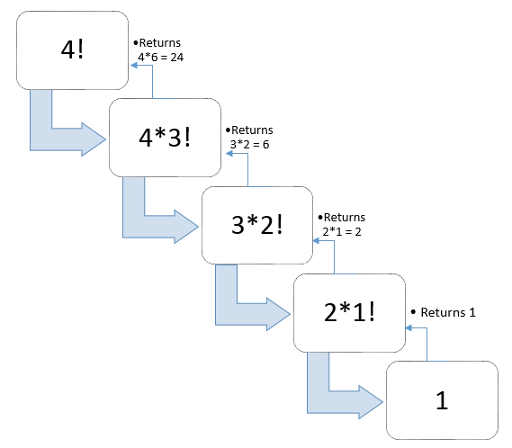
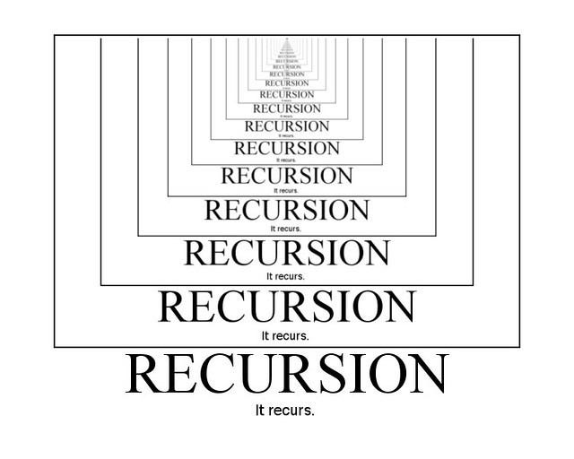

Recursion is a process in programming where the function calls itself repeatedly until it reaches a base case. Then, the recursion terminates.
What if you were asked to find the value of 4! using recursion?
public int factorial(int n) {
if (n == 1) return 1;
return n * factorial(n - 1);
}
A visualization of the code is on the right.
First, it will call factorial(4), which will return 4 * factorial(3). Next, it will run factorial(3).
factorial(3) will return 3 * factorial(2), which will return 2 * factorial(1). factorial(1) returns 1, it will go back to factorial(2) will return 2 * 1.
This means that factorial(3) will return 3 * 2 * 1 and factorial(4) will return 4 * 3 * 2 * 1.

In the factorial example above, the base case can be seen as factorial(1). This means that the recursion should stop when n = 1.
One big problem with recursion is that you may run into the problem of Stack Overflow. This error means that the recursion is either too deep or is infinite. This could mean a small mistake, such as having factorial(n + 1) instead of (n - 1).

Because stack overflow does not stop, it will never produce a result. Thus, the program will never stop.